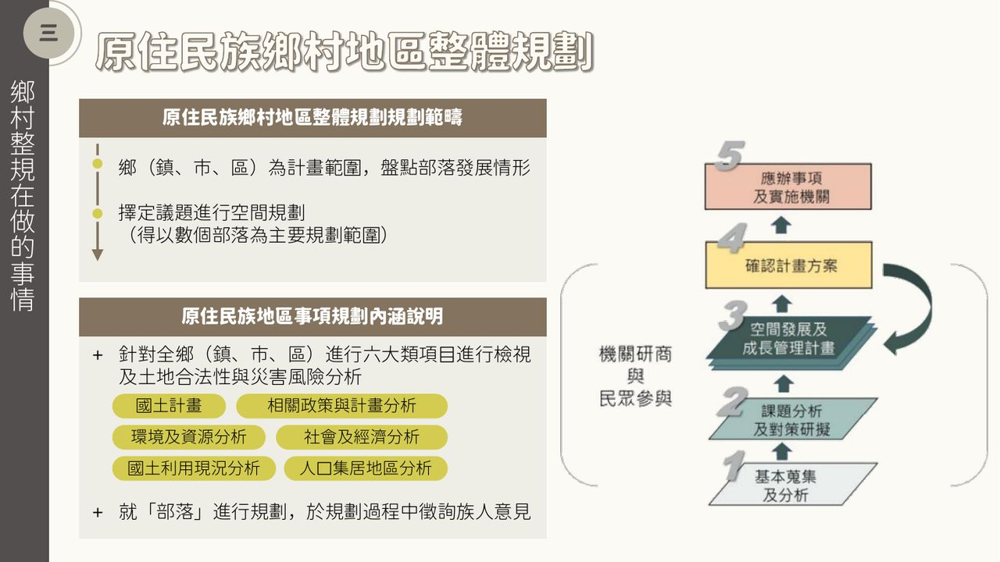
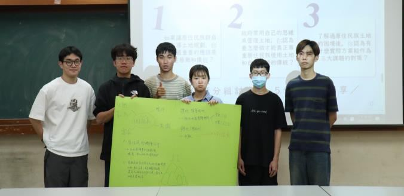
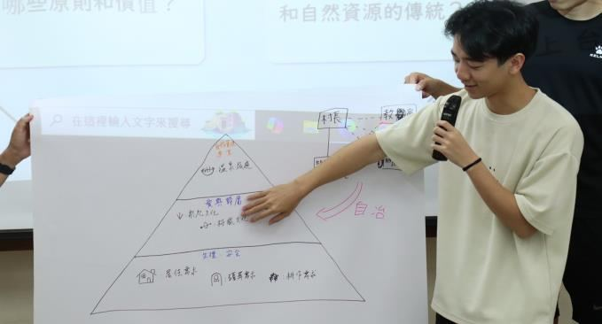

讀書會：從原民視角思考空間
原民文化對土地有其特殊需求，卻常被現行空間規劃忽視。讀書會從農業發展地區第四類、城鄉發展地區第三類與部落規劃制度讀起，透過小組討論引導大家從原民視角思考：有人主張加強部落會議與鄉代的互動，也有人建議拓展原住民族的表意管道。
原住民族鄉村地區整體規劃
以鄉（鎮、市、區）為計畫範圍盤點部落發展情形，再擇定議題進行空間規劃，可以數個部落為主要範圍。全鄉先就六大類項目進行檢視，並分析土地合法性與災害風險；規劃時就「部落」進行，過程中徵詢族人意見、召開部落會議。
- 國土計畫相關政策與計畫
- 環境及資源
- 社會及經濟
- 國土利用現況
- 人口集居地區
- 土地合法性與災害風險
空間規劃的項目包括居住、農業、傳統文化與祭儀、殯葬、公共設施、露營場與民宿等，原則上維持森林與自然資源的自然狀態，以低度利用、不開挖整地為主。

誰的土地，誰的計畫？
政治大學民族學系主任官大偉教授的講座，聚焦《國土計畫法》上路後原住民族面臨的制度挑戰與土地處境，從法律架構與族群主體性的矛盾出發，追問「誰有權決定土地的用途？」「國家與部落如何共構空間規劃？」。最後一場原民鄉規工作坊，則以東部原住民鄉鎮為題，模擬原住民族鄉村地區整體規劃。


本主題活動3 場
2025.05.14
讀書會第三屆第四期讀書會：原住民土地及空間治理
農四、城三與部落規劃制度。忠勤樓 405。
2025.06.06
講座誰的土地，誰的計畫？國土計畫法下的原住民族處境
講者：官大偉（政治大學民族學系主任）。忠勤樓 B08。
2025.06.13
工作坊原民鄉規工作坊
以東部原住民鄉鎮為題，模擬原住民族鄉村地區整體規劃。忠勤樓 402。